Префектура Окинава · Исигаки · еда
Пипаати: островная пряность Исигаки, её ферма, кухня и сувениры
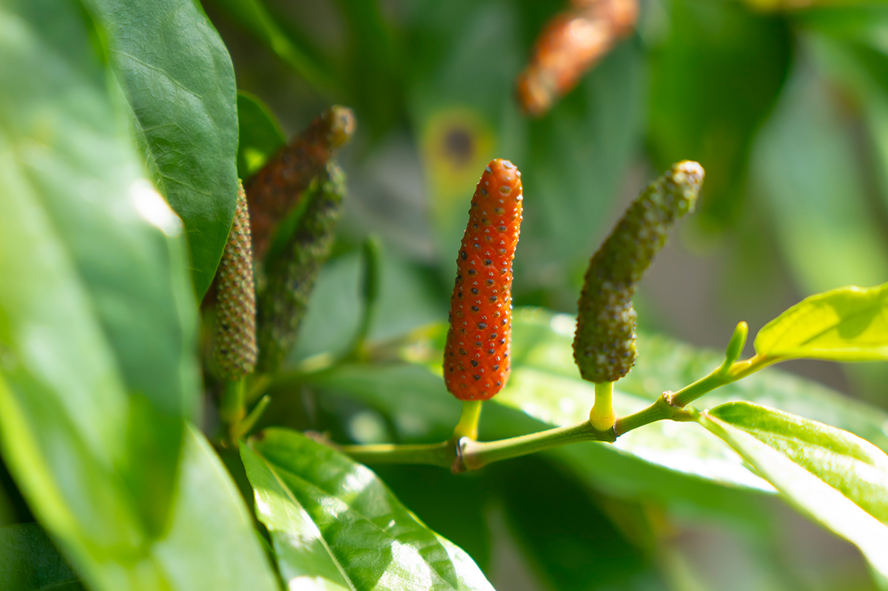
На островах Яэяма издавна растёт пряность, которую когда-то называли призрачной. Чтобы узнать её историю, мы отправились на Исигаки: к фермеру, который выращивает пипаати, в закусочные и рестораны, где её сыплют на еду, и в лавки, где её можно купить с собой.
Пряность
Что такое пипаати
Пипаати растёт в префектуре Окинава, но главным образом на островах Яэяма, к юго-западу от острова Окинава. Это лиана из семейства перечных, родственница чёрного перца, по-японски её называют «хихацу-модоки». Аромат у неё сладкий и прохладный, он сразу бьёт в нос, а жгучесть сложная и ни на что не похожая. В пипаати есть пиперин, вещество, которое улучшает кровообращение.
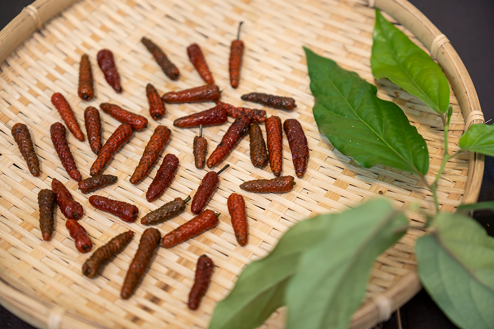
Откуда она взялась
Исигаки лежит в 400 км к юго-западу от острова Окинава. Это главный остров Яэямы и пристань, откуда уходят суда на все соседние острова. После эпохи Мэйдзи сюда переселялось много людей с основных островов Японии и с острова Окинава, чтобы распахивать новые земли, а местные жители в то же время уезжали на Гавайи и в Южную Америку.
На острове четыре больших старых квартала: Исигаки, Окава, Тоносиро и Аракава, и у каждого сложилась своя культура. Удивительно, но и пипаати в разных частях острова зовут по-разному: «пипаацу», «хихацу», «пипаадзу», «пияси». Мы будем называть её пипаати.
Глава кооператива по переработке тропических фруктов Исигаки, который изучает пипаати и придумывает продукты из неё, рассказал, что никаких записей и книг о ней на острове не сохранилось.
«В горах пипаати не встречается, так что вряд ли это дикое местное растение. Самая правдоподобная версия такая: её привезли откуда-то из Индонезии в эпоху большой торговли, когда королевство Рюкю богатело на обмене с Юго-Восточной Азией, Китаем, Японией и Кореей. Пипаати согревает тело и ускоряет обмен веществ, её используют даже в аюрведе, поэтому в торговле она наверняка ценилась. А редкость, возможно, и сделала её призрачной пряностью»
глава кооператива по переработке тропических фруктов Исигаки
Ферма
«Исигакидзима уми-но моно яма-но моно»: пипаати на бетонной стене
Название фермы переводится как «дары моря и дары гор острова Исигаки», и оно точное. Здесь перерабатывают морские водоросли мозуку и аосу, а из даров суши делают пипаати, осеннюю куркуму и островной красный перец. Ферма стоит на северо-востоке Исигаки, на землях, которые когда-то распахали переселенцы из разных краёв.
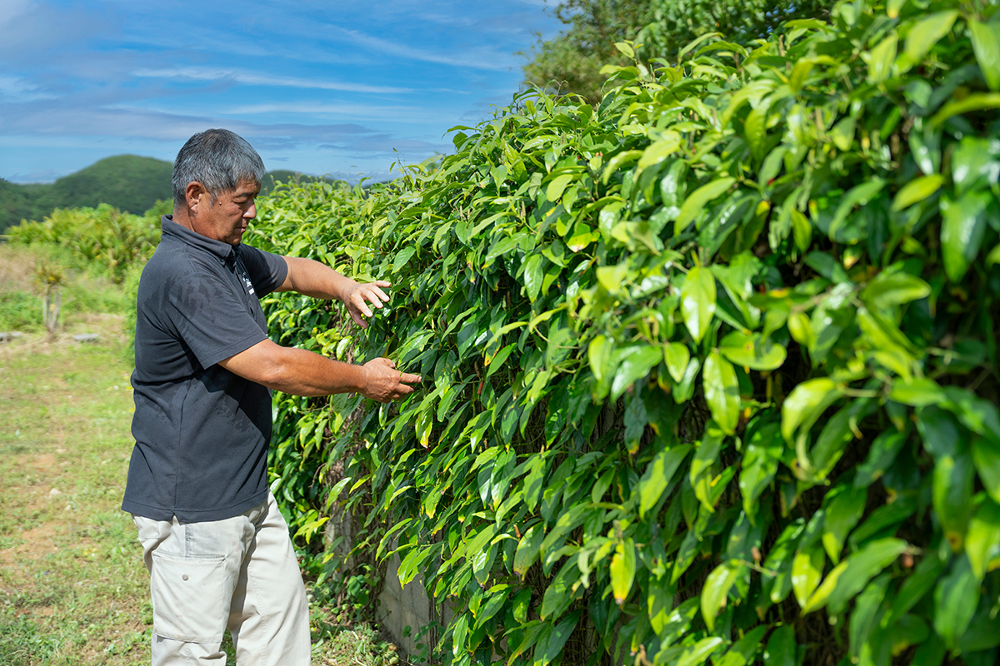
Глава фермы работает с природой: красная почва здесь богата железом, с моря дует солёный ветер, и для каждого растения он подбирает свой способ выращивания. Ананасы и бананы, которые растят на подстилке из перегноя, уходят в дорогие рестораны и универмаги.
Он привёл нас к бетонным стенам высотой 1,5 м, которые тянутся по огромному участку. Из-под зелёных листьев выглядывают маленькие красные плоды.
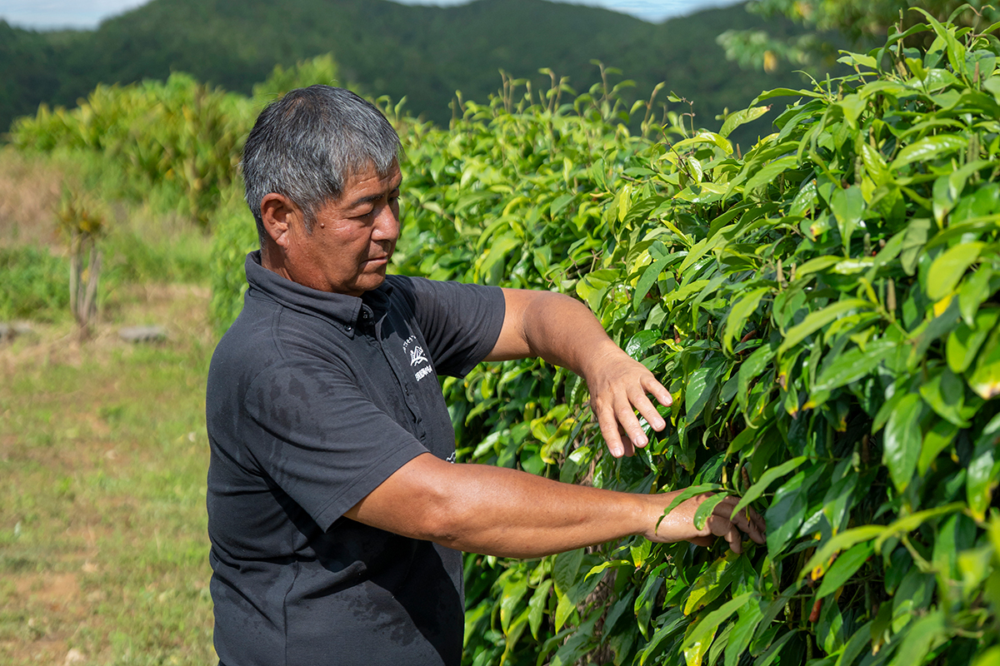
«Мой отец приехал на Яэяму ещё до возвращения Окинавы Японии и так полюбил эти места, что переселился сюда. Человеку со стороны остров казался кладовой удивительных диких трав. Тогда никто не выращивал пипаати на продажу, только для себя»
глава фермы
Всерьёз пипаати занялся уже сын. Вырастить саженцы из черенков удалось десять лет назад. Первых плодов приходится ждать два-три года, растёт пипаати медленно, а через семь-восемь лет куст начинает засыхать на корню. Пипаати вьётся по каменным оградам многих домов и давно стала частью островного пейзажа, но наладить стабильный урожай оказалось непросто.
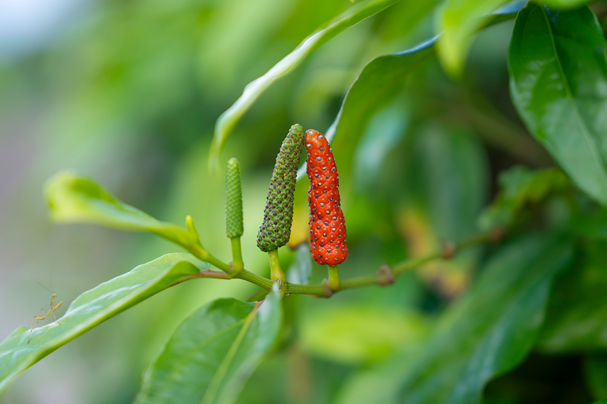
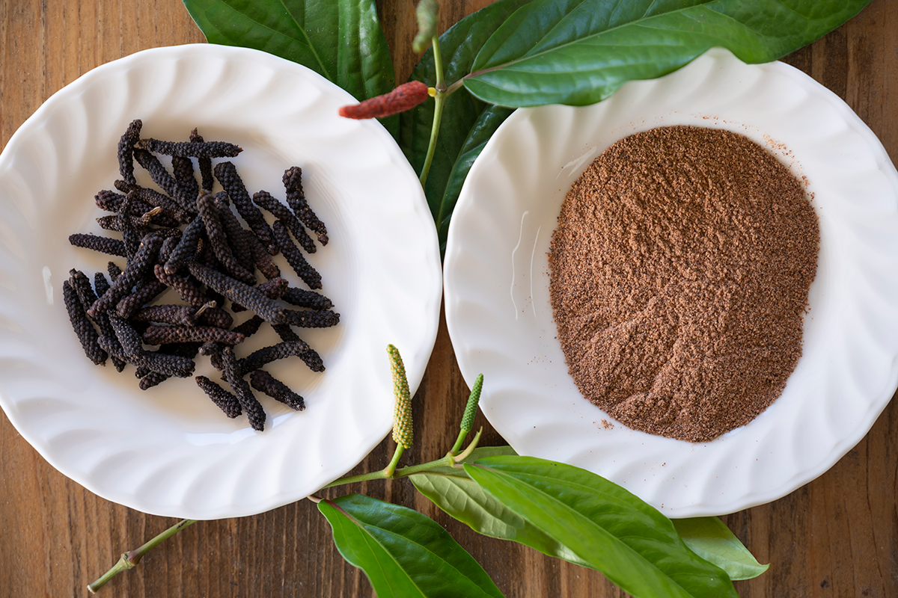
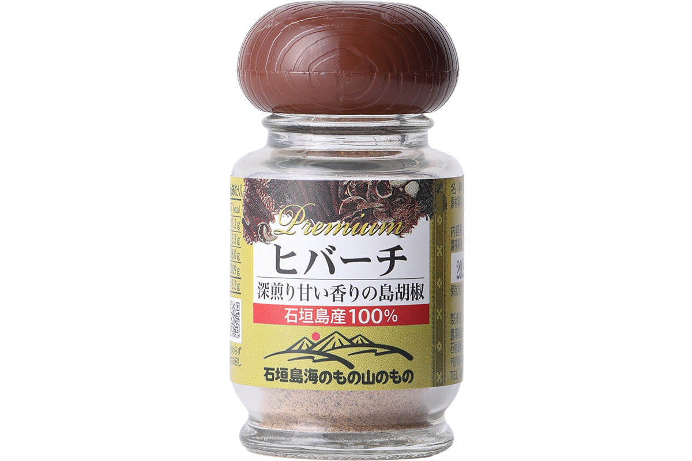
«Исигакидзима уми-но моно яма-но моно»
- Адрес
- префектура Окинава, Исигаки, Тоосато, 165-413
- Телефон
- +81 120-86-7757
- Часы работы
- 9:00–17:00
- Выходные
- воскресенье, суббота нерегулярно
- Сайт
- umiyama.org
Где попробовать
Три места на Исигаки
«Мацумуту-я»: соба в столетнем доме
Закусочная яэямской собы «Мацумуту-я» работает в старом доме под красной черепицей, которому около ста лет. На стене висят длинные полоски с названиями блюд: яэямская соба, соки-соба, окинавский десерт «кори-дзэндзай» со льдом. Есть и «дзюси» с листьями пипаати, его любят местные. Многие туристы возвращаются сюда ради разговора с хозяйкой. Посмотрите и на саму пипаати: она растёт в саду, обвивая деревья фукуги.
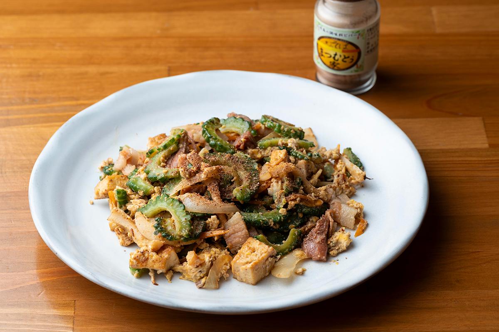
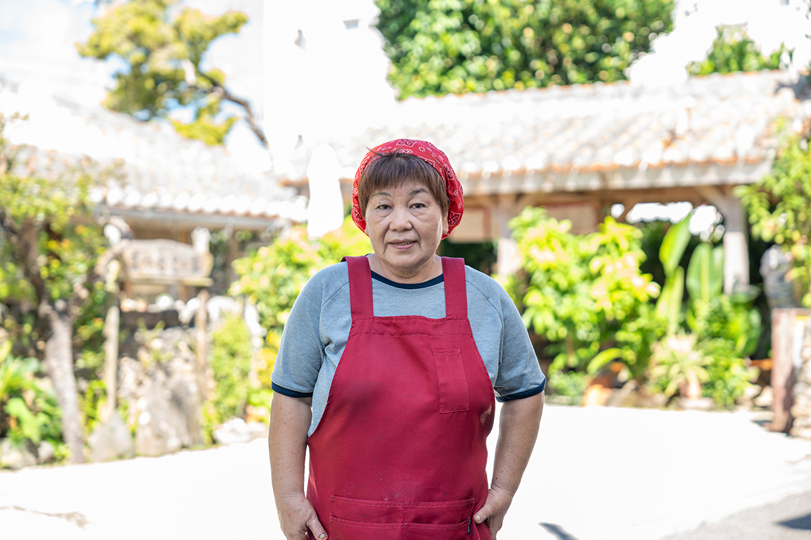
«В семьях на Исигаки пипаати сыплют на еду, как перец. Пахнет она лучше перца и освежает, поэтому хороша и к жирным блюдам»
хозяйка «Мацумуту-я»
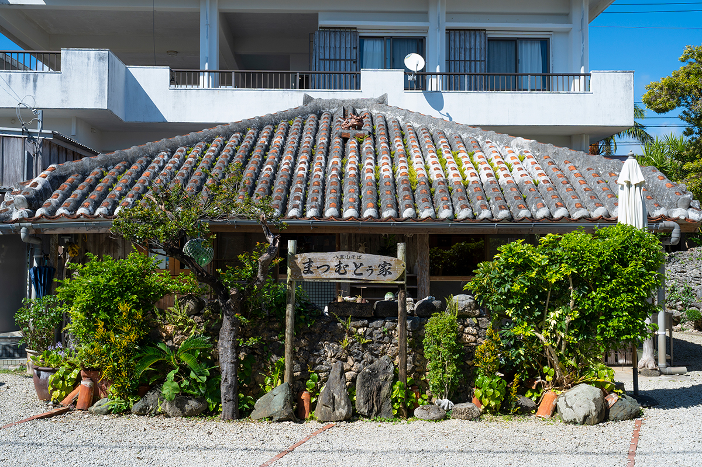
«Мацумуту-я»
- Адрес
- префектура Окинава, Исигаки, Тоносиро, 685-8
- Телефон
- +81 980-83-4516
- Часы работы
- 11:30–15:30
- Выходные
- понедельник, вторник
«Арада-я»: соба из дома мужа
Во дворе гостей встречают ухоженные бугенвиллеи, альпиния и гибискус. Хозяйка мечтала вернуть к жизни старый дом мужа и открыть в нём закусочную яэямской собы. Вместе с соседками, своими одноклассницами, она долго подбирала рецепт и наконец решилась открыть «Арада-я».
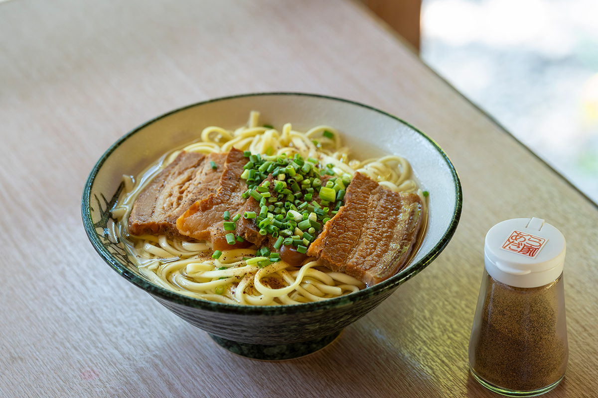
Соба здесь лёгкая, но с глубиной, простая и мягкая на вкус, и местные её хвалят. Пипаати, которая зреет на каменной ограде у одной из одноклассниц, в «Арада-я» обрабатывают по своему способу и продают. Из плодов удаляют сердцевину, и порошок получается яркого цвета.
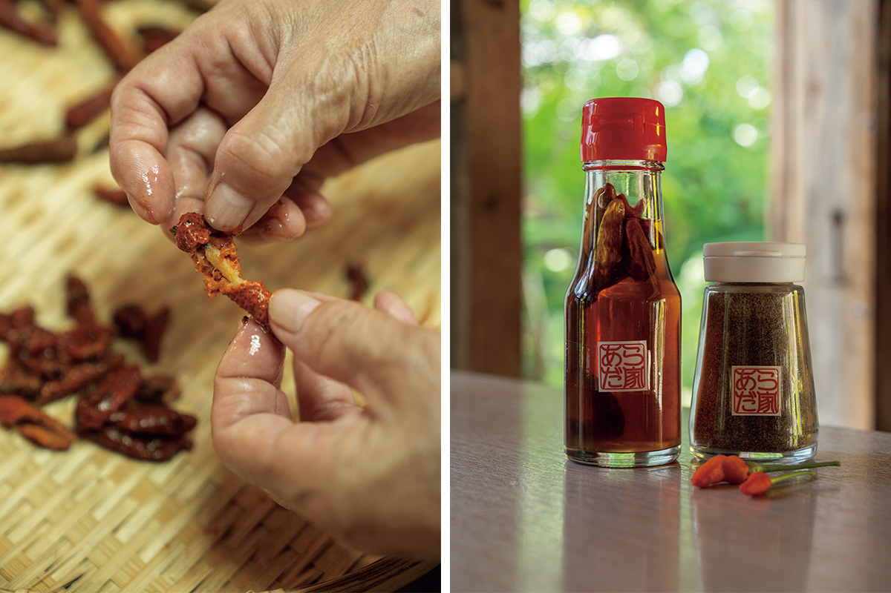
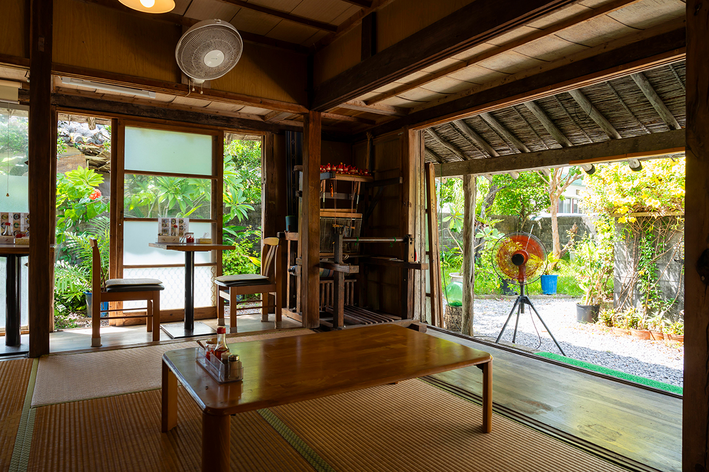
«Арада-я»
- Адрес
- префектура Окинава, Исигаки, Тоносиро, 144-5
- Телефон
- +81 80-1737-5843
- Часы работы
- 11:30–15:00 (последний заказ 14:30)
- Выходные
- понедельник
Bistro DRAPEAU: французское бистро на островных овощах
Bistro DRAPEAU держит супружеская пара: муж, чья мать родом с Исигаки, и жена-шеф с Хоккайдо. «Драпо» по-французски значит «флаг». Здесь подают простые блюда, в каждом из которых главный один продукт Яэямы, и вино. Супруги тесно общаются с местными фермерами, поэтому в меню попадают редкие вещи по сезону, например бутоны питахайи. Пипаати они добавляют даже к утренним тостам с маслом и пасте: эта пряность явно будит фантазию поваров.
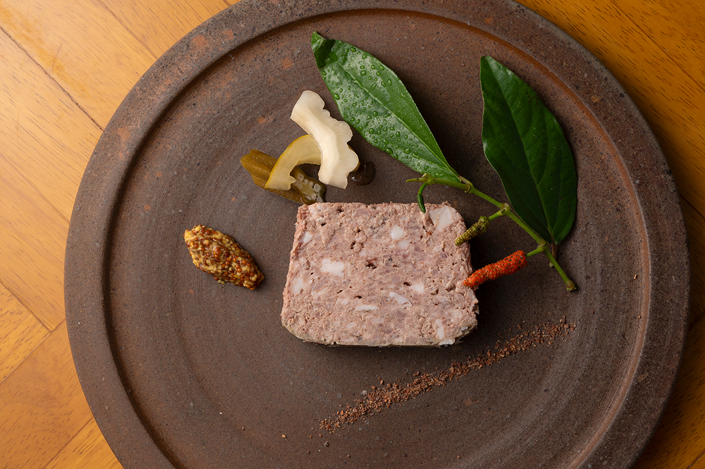
Самое популярное блюдо как раз паштет: пипаати с фермы родителей мужа, свиной фарш, печень. Для шефа сильные и необычные продукты острова стали открытием. Дальше она хочет изучать местные традиции, тесно связанные с праздниками и обрядами, и переносить их в свою кухню.
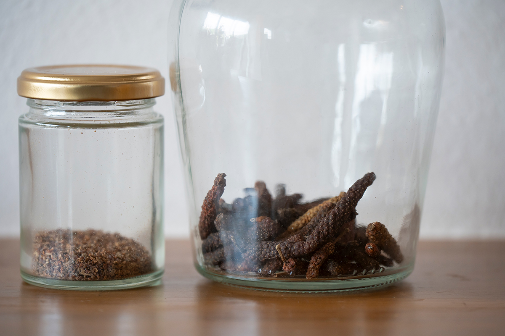
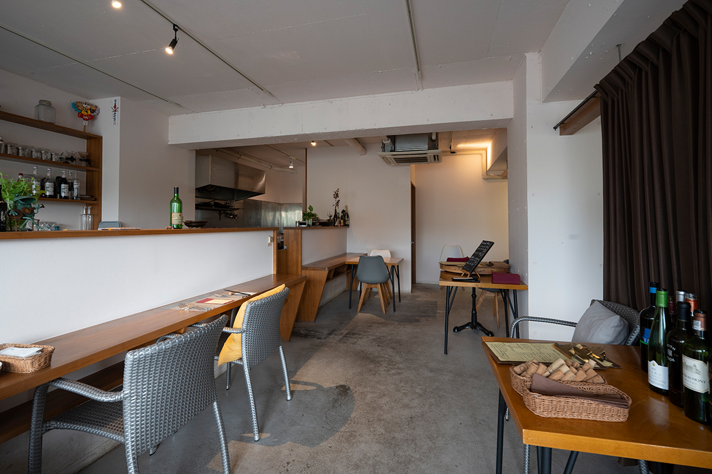
Bistro DRAPEAU
- Адрес
- префектура Окинава, Исигаки, Окава, 538-2, здание U-viento, 1-й этаж
- Телефон
- +81 980-87-7942
- Часы работы
- 17:00–23:00 (последний заказ 22:00)
- Выходные
- четверг
С собой
Кофе с пипаати и лавка Яэямы
«Марутоси сёкай»: три поколения кофе на Исигаки
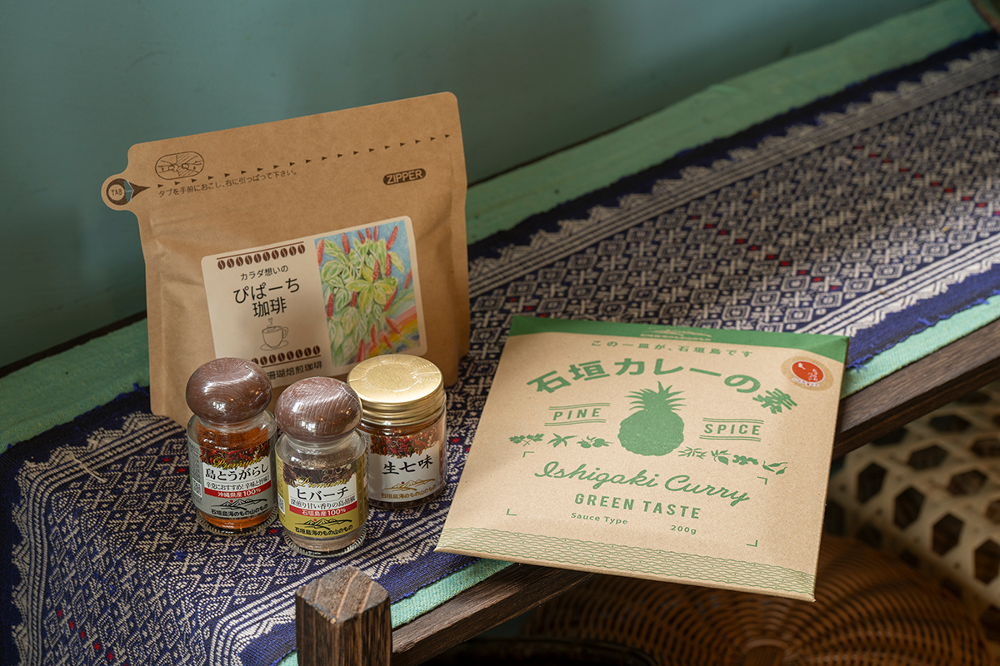
Оказывается, пипаати хорошо сочетается с кофе. «Марутоси сёкай» растит кофе на острове уже три поколения, из семян, привезённых с Гавайев 38 лет назад, и среди её сортов есть кофе с ароматом пипаати. Семья сама выращивает, обжаривает и продаёт кофе Исигаки. Её особенность в собственной обжарке с окаменевшими кораллами, которая называется «Исигакидзима санго байсэн».
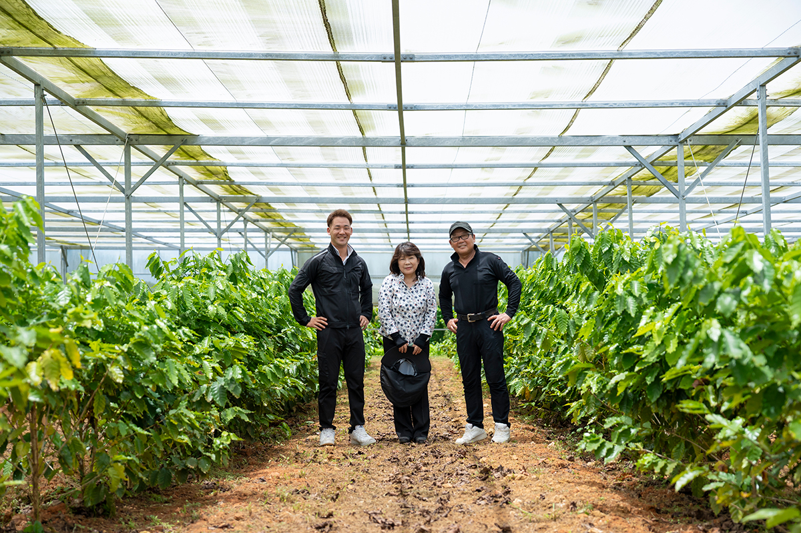
Хозяйство основал дед, но теперь второе и третье поколения перенесли его на новое место. На плантации «Исигакидзима кохи ноэн» площадью около 2800 кв. м они готовились к первому урожаю. Главный враг земледельца на острове это тайфуны. Помня прошлый ущерб, семья построила прочные теплицы на стальном каркасе, а чтобы получить слабокислую почву, которая нужна кофе, завезла 60 кузовов десятитонного самосвала земли.
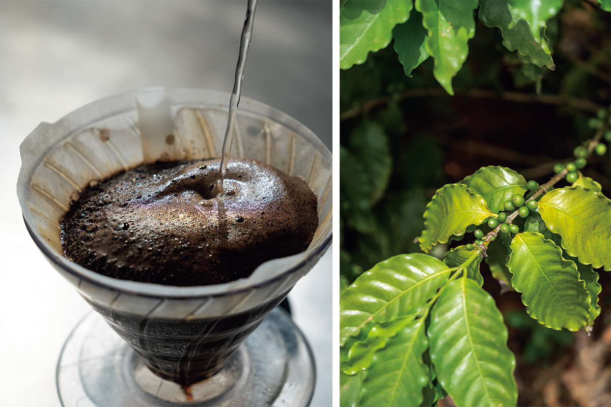
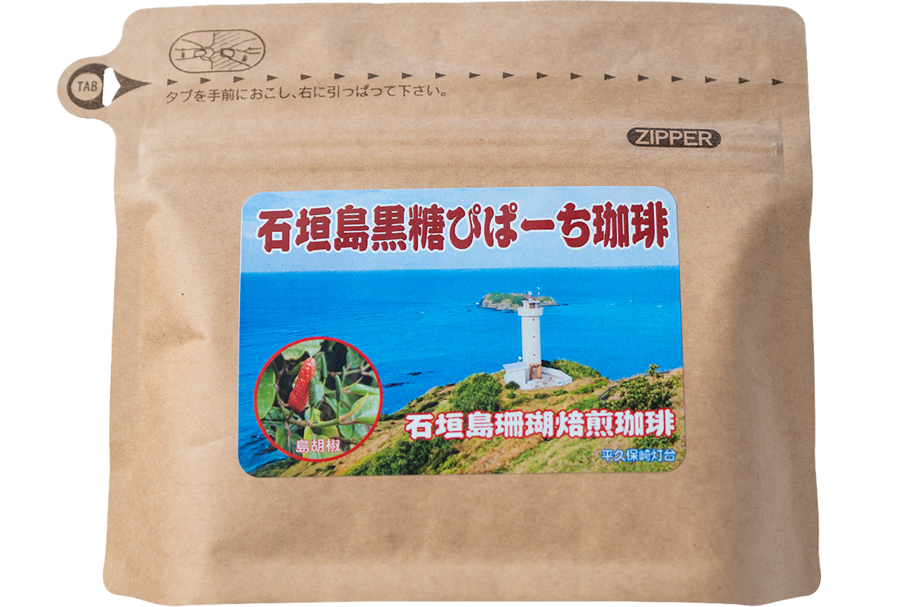
«Марутоси сёкай»
- Адрес
- префектура Окинава, Исигаки, Тоносиро, 638-1
- Телефон
- +81 980-82-4002
- Часы работы
- 9:00–17:00
- Выходные
- воскресенье; хозяев может не быть на месте, перед визитом позвоните
«Нидзииро-я»: лавка, которая рассказывает о людях
Лавку открыли с простой целью: рассказывать о мыслях производителей и о красоте островных пейзажей. Хозяйка ездит по всей Яэяме, знакомится с фермерами и мастерами и собирает у себя островные овощи, домашние заготовки, народные ремёсла и изделия мастеров.
«Я рассказываю и о том, как стареют фермеры, и о том, что происходит с редкими продуктами островов»
хозяйка «Нидзииро-я»
Здесь можно услышать о еде и ремёслах Яэямы всё, в том числе и об их трудностях: эта лавка полна любви к островам. Продаётся и кофе с пипаати, сделанный вместе с «Марутоси сёкай».
«Пипаати приятно пощипывает и согревает тело, а с молоком или соевым молоком получается особенно вкусно»
хозяйка «Нидзииро-я»
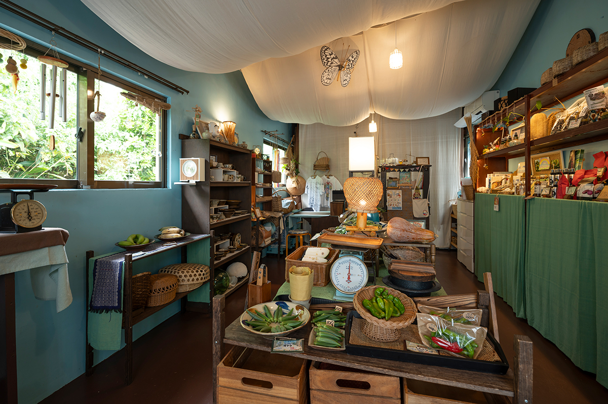
«Нидзииро-я»
- Адрес
- префектура Окинава, Исигаки, Аракава, 1583-118
- Телефон
- +81 70-9003-0275
- Часы работы
- 12:00–17:00
- Выходные
- среда, четверг, пятница; бывают внеплановые выходные, уточняйте в соцсетях
Фото: Садахо Найто.